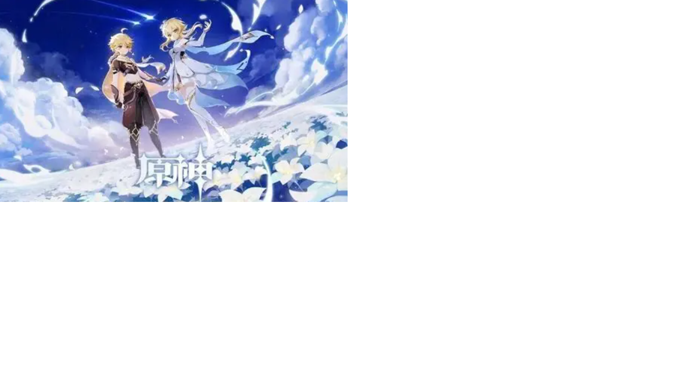

这是《原神》的官方宣传图，图中是旅行者双子：左侧哥哥空，右侧妹妹荧。 《原神》是米哈游（miHoYo）开发的开放世界冒险 RPG， 游戏舞台叫提瓦特大陆，这里存在风、岩、雷、草、水、火、冰七种元素 ，分布七个国度，每个国家由一位神明统治

双子兄妹本来正要离开提瓦特世界，去往下一个星球。天理维系者突然现身，拦住他们， 宣称 “人之子，不可离去”兄妹二人被迫迎战，战斗之后，其中一人被封印捕获， 另一人坠入提瓦特大陆，醒来后失去大部分记忆，开启寻找亲人的冒险，也就是游戏主线的开端。
 返回顶部
返回顶部